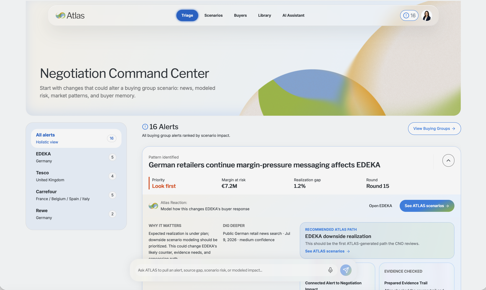
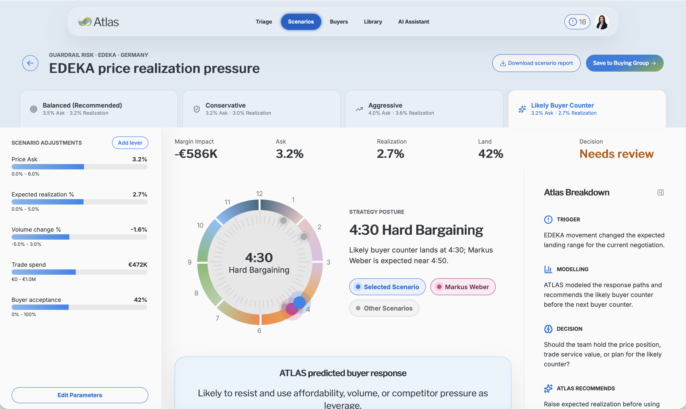

01
The prompt was exciting but dangerously open-ended.
PepsiCo had fragmented pricing, margin, market, buyer, and negotiation data. Without a strong product point of view, ATLAS could have become another AI dashboard.
Product strategy + UX / Decision intelligence sprint
Turning a broad AI negotiation idea into a user-led product thesis for high-stakes commercial decisions.
Role
UX / product design lead
Timeline
July 2026, 3-week reimagine sprint
Team
4 UX designers
Users
CNO negotiators and strategists
Demo walkthrough of the ATLAS direction at the beginning of the case study, showing how the product starts to frame negotiation complexity as decision intelligence.
Prototype demo / 1.5xATLAS started as a broad AI opportunity. My work was to pull it out of AI novelty and anchor it in the decisions negotiators actually needed to make.
01
PepsiCo had fragmented pricing, margin, market, buyer, and negotiation data. Without a strong product point of view, ATLAS could have become another AI dashboard.
02
Instead of starting with what AI could generate, I focused the team on what users needed to decide: what changed, why it mattered, what move to make, and what evidence could defend it.
03
I framed weekly user sessions around a clear value and KPI: discovery, co-design, concept trust, and final validation. Research was not a checkpoint. It was the engine of the sprint.
04
The final direction helped negotiators understand changes, model scenarios, predict buyer response, prepare arguments, generate outputs, and capture learning for the next round.
Context
Work moved across Excel, PowerPoint, SharePoint, Outlook, customer systems, commodity data, meetings, calls, and human memory.
User need
The real question was not "what does the data say?" It was "so what do we do now, and can we defend it under pressure?"
Product challenge
In a high-stakes commercial setting, a confident answer without provenance creates more risk than value.
Legacy workflow
Manual synthesis before strategy.
ATLAS workflow
Evidence-backed decisions before the room.
Prototype architecture / decision loop
I narrowed the prototype around one repeatable decision flow: notice the change, understand the risk, compare possible moves, prepare the argument, then capture what happened so the system gets smarter.
What shifted in pricing, margin, market signals, customer ask, or source freshness?
Which negotiations are exposed, and where are target, red line, or relationship risks emerging?
Compare recommended, conservative, aggressive, and user-authored moves with tradeoffs visible.
Use buyer memory to anticipate likely objections, timing pressure, and response patterns.
Package evidence, pushback responses, and audience-safe outputs for the next conversation.
Turn negotiation outcomes into memory that informs future buyer guidance and scenario quality.
Debrief learning feeds back into buyer memory, source confidence, and the next scenario recommendation.
User feedback showed the problem was not access to more information. It was confidence in what to do next. Each major feature translated one feedback theme into a product capability.

Feature 01
User insight
Users did not need another report; they needed "now what?" guidance from data.
How it shaped the build
The hub prioritized what changed, why it mattered, and what action should happen next.

Feature 02
User insight
Scenarios need custom variables because buyer, market, and region context varies.
How it shaped the build
Editable assumptions, custom levers, and market/buyer-specific inputs let users adjust AI recommendations.
Add image: buying group workspace with behavior patterns, objections, relationship cues, and handoff context.
Feature 03
User insight
Buyer behavior is tracked today in spreadsheets and memory, but it is not truly intelligent.
How it shaped the build
Buying group workspaces turned history into guidance: behavior patterns, objections, handoff context, and relationship cues.
Add image: pushback map connecting a recommendation to proof, objections, and suggested responses.
Feature 04
User insight
Negotiation prep is about building a defensible argument, not just collecting data.
How it shaped the build
ATLAS connected recommendations to proof, objection forecasts, pushback maps, and suggested responses users could bring into the room.
Add image: source confidence layer with freshness, provenance, confidence, and stale-data warnings.
Feature 05
User insight
Data lives across fragmented internal, customer, third-party, and spreadsheet sources.
How it shaped the build
Source labels, freshness, confidence, provenance, and stale/missing-data warnings became core trust features.
Add image: output generator showing CNO, leadership, KAM/CAM, and customer-safe brief versions.
Feature 06
User insight
Outputs need to be usable by different audiences, not generic AI prose.
How it shaped the build
The output layer created audience-safe briefs: CNO, leadership-safe, KAM/CAM-safe, and customer-safe versions.
Add image: debrief capture flow showing outcomes, concessions, buyer behavior, and lessons feeding future guidance.
Feature 07
User insight
Live recording may be legally complex, but post-meeting debrief capture is practical.
How it shaped the build
The product emphasized post-session debriefs that capture outcomes, concessions, buyer behavior, and lessons for future negotiations.
01 / Product thesis
Signal
Users did not need another report.
Move
Make ATLAS reason through risk, compare paths, and recommend next moves.
Result
A sharper product thesis the team could explain through user pressure and decision quality.
02 / Trust model
Signal
Recommendations had to be defensible to leadership, KAMs, and customers.
Move
Design source labels, confidence states, assumption editing, and evidence trails into the core flow.
Result
Trust moved from explanation copy into visible product behavior.
03 / Core capability
Signal
Negotiators keep mental models of buyer behavior and relationship dynamics.
Move
Turn profiles into prediction inputs: likely objections, past-round patterns, and concession preferences.
Result
ATLAS became more than static context. It could guide strategy for the next round.
Outcome
ATLAS was reframed from dashboard/chatbot to decision-intelligence partner, with scenario modeling as the core engine.
Product impact
The sprint produced a clearer product direction, prototype architecture, and pitch narrative grounded in user evidence.
What this shows
I can champion UX when the brief is ambiguous: define the product point of view, protect the real problem, and turn user insight into buildable strategy.